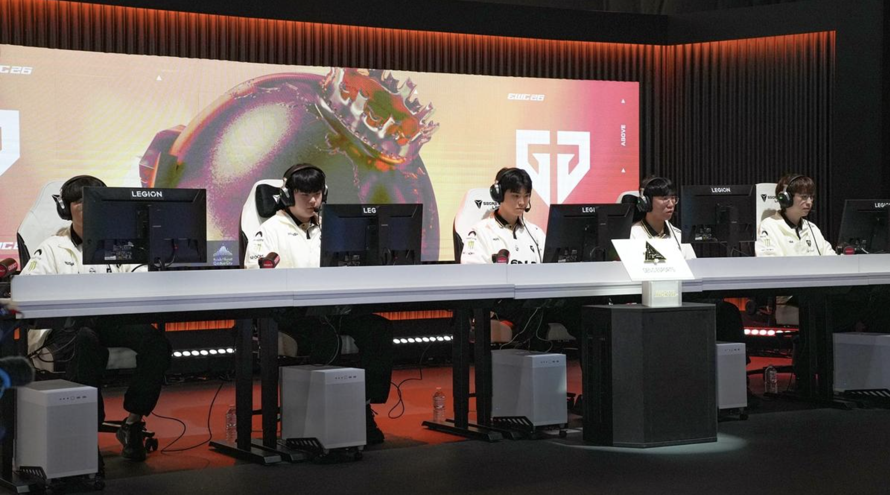
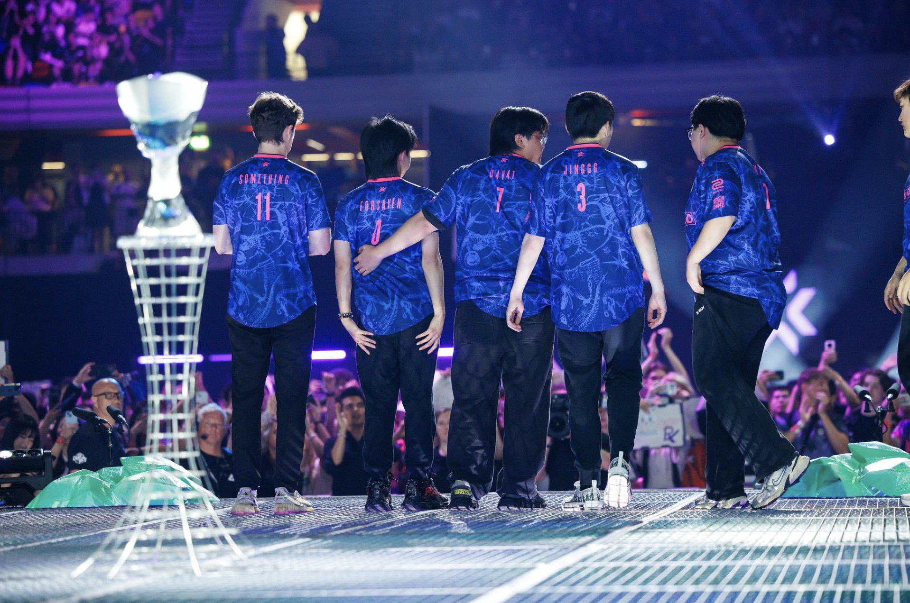
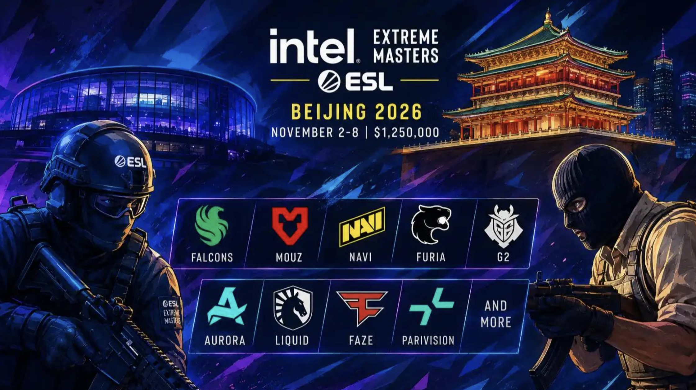

eSport Arena
Latest updates from the eSports World

Gen.G had an impressive performance at the 2026 World Championship (Worlds). The team defeated LYON 3–0 in the quarterfinals and secured a place in the semifinals. They continue to show why they are considered one of the strongest teams in competitive League of Legends.
Invictus Gaming made a strong comeback at Worlds 2026 by defeating Top Esports 3–1. The victory secured their place in the semifinals, marking an important achievement for the team. Fans are now looking forward to seeing how far they can go in the tournament.

Paper Rex is preparing for changes ahead of the 2027 VALORANT season. After competing at Champions 2026, the organization announced that Jinggg and d4v41 would be leaving the team. This marks a new chapter for PRX as they prepare to rebuild their roster and compete again.

IEM Beijing 2026 brought together some of the best Counter-Strike 2 teams in the world. The MongolZ and MOUZ managed to secure places in the semifinals after strong performances. The tournament continues to attract attention from fans around the world as the teams compete for the championship title.